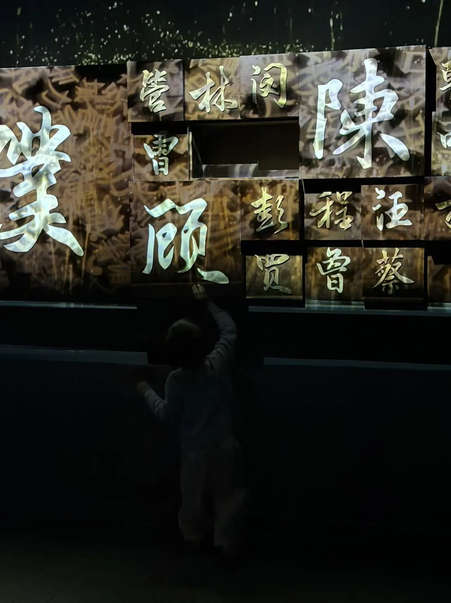
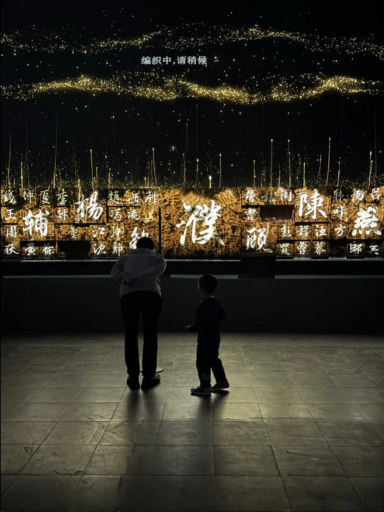
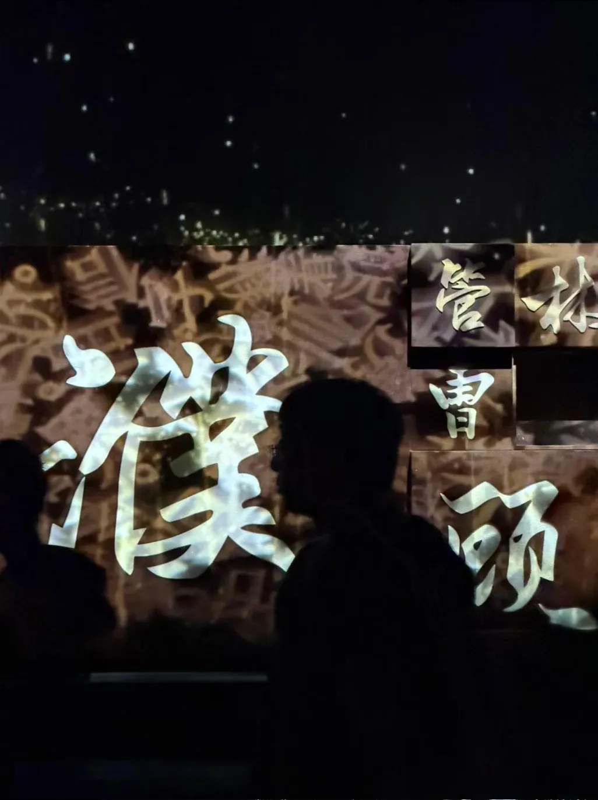
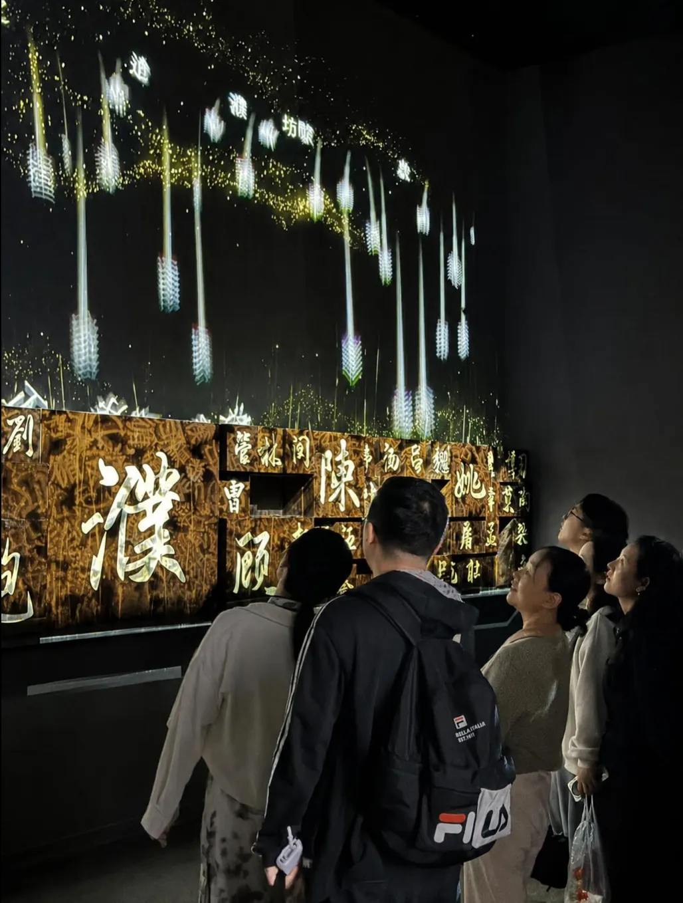
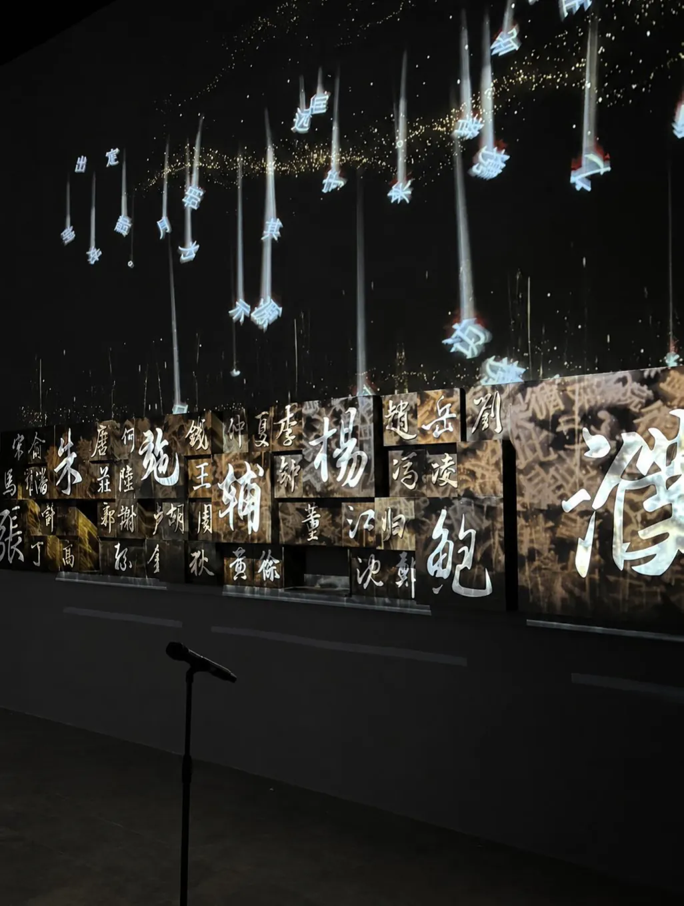

The Unwoven Sea of Words
待织的辞海
一套为古镇空间定制的 AI 语音交互 Mapping 系统。
多模态语音识别听懂来访者说出的姓氏，结合梳理好的濮院在地姓氏文化，实时生成坠落、堆叠、重织的文字动画，再由 Mapping 投影铺满整面立体字墙，从程序开发到现场落地完整实现。
A custom AI voice-interaction and projection-mapping system for a historic town space.
Multimodal speech recognition understands the family name a visitor speaks, links it to Puyuan's curated local surname culture, and generates falling, stacking, re-weaving text animation in real time, which projection mapping then spreads across an entire sculpted wall of characters, carried through from software development to on-site installation.
来到北更楼的人，只需对着话筒说出自己的姓氏。AI 识别出这个字，让它从空中缓缓坠落，与其他人的姓氏一起堆叠、碰撞、覆盖，最终汇入一面不断生长的「辞海」。
有人等着家人的姓氏出现，也有人站在原地，看陌生人的姓氏落进同一片海里。这些字不会永久停留：新的姓氏落下，旧的慢慢消失，像织布一样不断生成。濮院以织造闻名，这里织的是来来往往的人，以及他们之间短暂却真实的相遇。
Visitors to Beigeng Tower need only speak their family name into the microphone. AI recognises the character and lets it drift down from above, where it stacks, collides and overlaps with the names of others before joining an ever-growing “sea of words”.
Some wait for their family's names to appear; others stay where they are, watching strangers' names fall into the same sea. None of the characters stay for good: as new names fall, old ones fade, generated again and again like cloth on a loom. Puyuan is a town known for weaving, and what is woven here is the people who pass through and their brief but real encounters.




